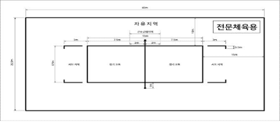
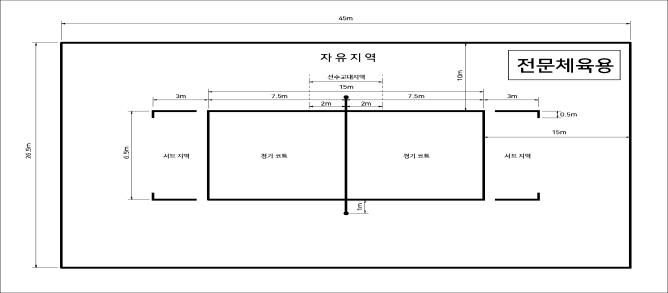

족구공은 빠른 속도와 신체 충격을 최소화하기 위해 과학적인 데이터를 근거로 12조각 이내로 제작
족구의 기능향상을 위한 아웃솔을 기본으로 선수를 보호하기 위한 바닥면을 검증한 전용 족구화 인증
네트플레이를 고려한 안정적인 재질의 전용 네트 및 정확한 오버네트를 판단하기 위한 안테나
족구의 기능향상을 위한 아웃솔을 기본으로 선수를 보호하기 위한 바닥면을 검증한 전용 족구화 인증
족구공은 빠른 속도와 신체 충격을 최소화하기 위해 과학적인 데이터를 근거로 12조각 이내로 제작
족구의 기능향상을 위한 아웃솔을 기본으로 선수를 보호하기 위한 바닥면을 검증한 전용 족구화 인증
네트플레이를 고려한 안정적인 재질의 전용 네트 및 정확한 오버네트를 판단하기 위한 안테나
안정적인 경기력과 선수의 충돌 시 안전을 위한 보호 마감재 공인 사용
족구경기는 각기 4명씩으로 구성된 두 팀이 플레이를 하는 것이다. 각 팀의 목적은 발(무릎미만)과 머리(턱 이상)만을 이용해 공을 상대 팀의 코트로 넘겨 득점하거나, 상대 팀이 득점 하려는 것을 막는데 있다.
경기는 한 세트 15점을 먼저 선취한 팀이 2세트를 먼저 취득하게 되면 승자가 된다.
족구경기는 공인 심판과 공인 시설 및 용구에 의해 진행된다.
족구 전용 경기장은 사이드라인에서 10m, 엔드라인에서 15m 이내는 어떠한 장애물도 없도록 공간이 확보되어야 한다.
경기장의 표면은 평평하고 수평을 이루어야 하며 균일해야한다.
모든 경기는 별지 제1호 서식에 따른 대한민국족구협회 승인 족구 코트 매트 위에서 해야 한다.
경기장 바닥으로부터 천장까지 사이의 가장 낮은 장애물까지의 사이는 최소 12m이어야 한다.
코트의 규격은 다음 각 호와 같다.
실내경기장의 기온은 최저 16℃이상 25℃ 이하여야 한다.
조명은 선수들과 경기원들의 눈부심을 최소화 하여 설치되어야 하며, 1,000룩수(lux) 이상으로 공식대회의 경우 경기장 표면 1m 위에서 측정했을 때 1,000룩스(lux) 보다 낮아서는 안 된다.〔본조신설 2022.9.24.〕
경기장은 바닥이 단단한 평면의 직사각형으로 코트와 자유지역으로 구성된다. 자유지역에는 어떠한 장애물도 없어야 하며, 사이드라인 쪽은 5m(2코트 이상 시 코트와 코트간격 8m 이상), 엔드라인 쪽은 8m 이상을 이격하여야 한다. <개정2021.2.6.><개정2022.9.24.>
실외 족구 전용경기장의 표면은 별지 제2호 서식과 같이 인조잔디와 천연고무재 매트만을 사용하며, 모든 표면은 협회의 승인을 받아야 한다.<신설2022.9.24.>
코트의 규격은 다음 각 호와 같다.
규격은 12조각 이내로 무게는 330～360g, 공기압은 0.45bar±0.01bar(구장의 조건에 따라 ±10%추가)이며, 공의 반발높이는 20℃에서 100∼125cm, 5℃에서 90∼110cm 이내(KISS 시험기준에 따라 5cm 이상의 강철재 바닥 기준 2m 높이에서 수직으로 자유낙하)의 반발이 되고, 크기는 지름 200∼205mm이다. 단, 초등부는 290±10g 이며, 규격은 같다.<개정2021.3.27.>
전문체육 공인구는 12조각 이내로 무게는 360～380g, 공기압은 0.45bar±0.01bar(구장의 조건에 따라 ±10%추가)이며, 공의 반발높이는 20℃에서 90∼110cm, 5℃에서 70∼90cm 이내(KISS 시험기준에 따라 5cm 이상의 강철재 바닥 기준 2m 높이에서 수직으로 자유낙하)의 반발이 되고, 크기는 지름 200∼205mm이다.<신설2022.9.24.>
대회사용구는 대한민국족구협회 및 산하단체에서 주최·주관하는 공식대회 시 공인규정에 의거 대회사용구로 지정된 공을 사용한다.
규격은 가죽이나, 인조가죽으로 튼튼한 재질이어야 하며, 바닥은 염료를 사용하지 않은 고무나 합성고무로 요철의 형태는 자유롭게 적용하되 요와 요의 간격은 5mm 이내여야하고, 요와 철의 높이는 3mm 이내로 한다.<개정2022.9.24.>
가죽이나 인조가죽의 상부표피 돌출부위는 2mm 이내로 하며, 바닥 모서리는 선수의 부상과 전용바닥재 손상을 예방하기 위해 둥글게 처리한다.<신설2022.1.22.><개정2022.9.24.>
족구화는 대회의 품위, 전용 바닥재 손상여부, 선수 안전등을 고려하여 족구화라고 지정한 신발로 제한한다.
선수의 경기복장은 팀별로 동일해야하며, 하의는 반바지로 하고, 상의는 등번호를 필히 게재하여야 한다. 등번호는 등 중앙에 위치하여야 하며 번호의 크기는 15cm 이상으로 한다. 상·하의 번호는 일치하고, 족구화를 착용하여야 한다.<개정2022.11.30.>
심판의 복장 및 소지품은 족구심판매뉴얼로 정하여 운영한다.
주장은 경기 시작 전 주장 띠를 좌측 팔에 필히 착용하여야 한다.
타이즈 착용 및 밀착형 무릎보호대는 허용한다.
두건의 두께는 1mm이하, 머리띠는 넓이 5cm이내 두께는 3mm이하의 규격을 허용하되, 모자 착용은 금한다.
안구보호대 착용은 허용한다.
기타 첨부 부착물은 불허한다.
족구경기는 각기 4명씩으로 구성된 두 팀이 플레이를 하는 것이다. 각 팀의 목적은 발(무릎미만)과 머리(턱 이상)만을 이용해 공을 상대 팀의 코트로 넘겨 득점하거나, 상대 팀이 득점 하려는 것을 막는데 있다.
경기는 한 세트 15점을 먼저 선취한 팀이 2세트를 먼저 취득하게 되면 승자가 된다.
족구경기는 공인 심판과 공인 시설 및 용구에 의해 진행된다.
족구 전용 경기장은 사이드라인에서 10m, 엔드라인에서 15m 이내는 어떠한 장애물도 없도록 공간이 확보되어야 한다.
경기장의 표면은 평평하고 수평을 이루어야 하며 균일해야한다.
모든 경기는 별지 제1호 서식에 따른 대한민국족구협회 승인 족구 코트 매트 위에서 해야 한다.
경기장 바닥으로부터 천장까지 사이의 가장 낮은 장애물까지의 사이는 최소 12m이어야 한다.
코트의 규격은 다음 각 호와 같다.
실내경기장의 기온은 최저 16℃이상 25℃ 이하여야 한다.
조명은 선수들과 경기원들의 눈부심을 최소화 하여 설치되어야 하며, 1,000룩수(lux) 이상으로 공식대회의 경우 경기장 표면 1m 위에서 측정했을 때 1,000룩스(lux) 보다 낮아서는 안 된다.〔본조신설 2022.9.24.〕
경기장은 바닥이 단단한 평면의 직사각형으로 코트와 자유지역으로 구성된다. 자유지역에는 어떠한 장애물도 없어야 하며, 사이드라인 쪽은 5m(2코트 이상 시 코트와 코트간격 8m 이상), 엔드라인 쪽은 8m 이상을 이격하여야 한다. <개정2021.2.6.><개정2022.9.24.>
실외 족구 전용경기장의 표면은 별지 제2호 서식과 같이 인조잔디와 천연고무재 매트만을 사용하며, 모든 표면은 협회의 승인을 받아야 한다.<신설2022.9.24.>
코트의 규격은 다음 각 호와 같다.
규격은 12조각 이내로 무게는 330～360g, 공기압은 0.45bar±0.01bar(구장의 조건에 따라 ±10%추가)이며, 공의 반발높이는 20℃에서 100∼125cm, 5℃에서 90∼110cm 이내(KISS 시험기준에 따라 5cm 이상의 강철재 바닥 기준 2m 높이에서 수직으로 자유낙하)의 반발이 되고, 크기는 지름 200∼205mm이다. 단, 초등부는 290±10g 이며, 규격은 같다.<개정2021.3.27.>
전문체육 공인구는 12조각 이내로 무게는 360～380g, 공기압은 0.45bar±0.01bar(구장의 조건에 따라 ±10%추가)이며, 공의 반발높이는 20℃에서 90∼110cm, 5℃에서 70∼90cm 이내(KISS 시험기준에 따라 5cm 이상의 강철재 바닥 기준 2m 높이에서 수직으로 자유낙하)의 반발이 되고, 크기는 지름 200∼205mm이다.<신설2022.9.24.>
대회사용구는 대한민국족구협회 및 산하단체에서 주최·주관하는 공식대회 시 공인규정에 의거 대회사용구로 지정된 공을 사용한다.
규격은 가죽이나, 인조가죽으로 튼튼한 재질이어야 하며, 바닥은 염료를 사용하지 않은 고무나 합성고무로 요철의 형태는 자유롭게 적용하되 요와 요의 간격은 5mm 이내여야하고, 요와 철의 높이는 3mm 이내로 한다.<개정2022.9.24.>
가죽이나 인조가죽의 상부표피 돌출부위는 2mm 이내로 하며, 바닥 모서리는 선수의 부상과 전용바닥재 손상을 예방하기 위해 둥글게 처리한다.<신설2022.1.22.><개정2022.9.24.>
족구화는 대회의 품위, 전용 바닥재 손상여부, 선수 안전등을 고려하여 족구화라고 지정한 신발로 제한한다.
선수의 경기복장은 팀별로 동일해야하며, 하의는 반바지로 하고, 상의는 등번호를 필히 게재하여야 한다. 등번호는 등 중앙에 위치하여야 하며 번호의 크기는 15cm 이상으로 한다. 상·하의 번호는 일치하고, 족구화를 착용하여야 한다.<개정2022.11.30.>
심판의 복장 및 소지품은 족구심판매뉴얼로 정하여 운영한다.
주장은 경기 시작 전 주장 띠를 좌측 팔에 필히 착용하여야 한다.
타이즈 착용 및 밀착형 무릎보호대는 허용한다.
두건의 두께는 1mm이하, 머리띠는 넓이 5cm이내 두께는 3mm이하의 규격을 허용하되, 모자 착용은 금한다.
안구보호대 착용은 허용한다.
기타 첨부 부착물은 불허한다.
한 팀은 감독, 선수를 포함하여 최대 8명으로 구성하며, 선수의 동일한 등번호 사용은 금지한다.<개정2022.11.30.>
최강부는 성적 산출에 의해 선정하되, 모든 부서의 선수는 주소지를 기준으로 협회에 등록을 하여야 하며, 전국초청대회이상 및 타 시·도 대회에 출전 할 때는 소속 시·도협회 사무국의 승인을 받아야 한다.
세부사항은 부별 관리규정으로 정하여 운영한다. 단, 대한민국족구협회 산하 17개 시·도협회에 등록된 선수 및 팀은 협회의 경기규칙 및 제 규정을 준수하지 않는 타 족구 단체의 행사(대회)에 참여시 제재를 감수 하여야 하며, 심판은 자격을 취소한다.
팀 및 선수가 대회에 참가신청 시 부별 경기 일차가 다를 경우는 중복 참가신청이 가능하다. 단, 최강부 참가 선수는 제외한다.
감독의 복장은 단정하여야 하며, 규정준수, 팀의 소속감고취, 행사참여, 정신교육의 책임을 가지며 대회집행부 및 심판진의 불합리한 진행이 야기될 시 경기 종료 후 이의 신청, 경기 시 작전타임, 선수교체의 권한을 갖는다.
감독은 참가 신청서에 명시된 자만이 수행 할 수 있으며, 경기 시작전 해당 코트에 위치하여야 한다. 어떠한 경우라도 선수가 감독대행을 할 수 없다.
모든 부서의 감독은 반드시 지도자 자격을 취득한 사람으로 협회의 경기인등록시스템에 등록된 사람만이 감독으로 등록 할 수 있다. 또한 모든 지도자는 협회에 등록 후 발급받은 자격증을 패용하여야 한다.
감독은 선수로 등록 할 수 없다. 단, 경기 일차가 다른 타 부서의 경우는 선수로 등록 할 수 있다.
최강부 감독은 최초 등록 후 최소 6개월은 감독직을 유지하여야 한다.
각 팀은 주장을 선임하여야 하며, 주장 띠 미착용 시 심판판정에 대한 질의 및 기타 요구를 할 수 없다.
주장은 경기장, 공의 점검, 상대 팀 선수확인, 애매한 판정에 대한 질의 및 규칙 적용에 대한 해석요구, 복장교환, 환자 발생 시 휴식 등의 요구를 할 수 있다.
주장의 요구를 주심의 판단에 따라 반려 또는 승인 할 수 있다.
주장이 교체 시 주장띠는 주전 선수 중에 인계하여야 한다.
팀 선수는 경기 전 최소 4명을 구성해야 한다.
경기 시작 전 또는 경기 중 4명의 선수 미달일 경우 실격패 처리한다.
심판이 신분확인을 요청 할 경우에는 반드시 응해야 한다.
배번은 자유롭게 하고, 경기진행 후 변경은 불가하며, 대회 시작 30분전까지 출전선수의 확인을 받는다.
득점은 상대편 코트에 공이 정상적으로 성공하거나 상대팀이 반칙 또는 벌칙을 받는 경우이며, 득점에 반하여 상대 팀은 실점이 된다.
득점의 행위가 종료 후 동작이 연결되어 규칙을 위반할 경우 시간차상 득점이 우선하면 득점으로 인정되며, 규칙위반이 우선하면 실점이다. <개정2020.7.9> ③∼⑤ 항 <삭제2021.2.6.>
경기는 받기(리시브), 띄우기(토스), 차기(킥), 주기(서브)로 이루어진다.
사이드라인과 엔드라인의 어느 부분이라도 공의 터치 시는 인플레이이다.
선수의 위치는 포지션에 관계없이 자유롭게 위치한다.
모든 경기는 3세트를 원칙으로 한다. 단, 대회의 장이 여건을 고려하여 증·감할 수 있다.
세트점수는 15점으로 듀스 시 2점을 먼저 선취한 팀이 승이며, 상한 점수는 19점이다. 최종세트는 8점을 선취한 경우 코트를 교체한다. 단, 최종세트 경기 중 코트교체 시점 8점을 초과하였을 시는 확인된 상황에서 코트를 교체한다.
점수는 공격과 수비에 관계없이 교차점수를 적용한다.
작전시간은 해당 팀 감독의 요청으로 주심의 승인이 있어야 하며, 1세트 1회 1분 이내로 실시한다.
선수의 교체는 해당 팀 감독의 요청으로 주심이 다음 각 호의 기준에 의하여 승인한다.
신체의 허용부위는 무릎미만의 다리와 턱 이상의 머리만을 사용한다.
코트플레이는 3바운드 3터치 이내에 자유롭게 할 수 있으며, 서브나 공격을 가로막기(허용부위는 제9항과 같다)를 할 수 있고, 바운드 후 네트 상단에 위치한 공은 공격 측에 우선권을 부여한다.(수비 측 터치 시 실점)
바운드와 선수의 공 터치는 각 1회씩 3회 이내에만 허용한다.(33원칙) 단, 최강부는 2바운드 3터치를 원칙으로 한다. 방송중계 등 이벤트 경기에는 집행부에서 별도 운영 할 수 있다.<개정2021.11.13.>
네트플레이는 허용되며, 신체를 제외한 네트에서 발생하는 모든 상황은 인플레이이다. 다만 안테나를 기준으로 내측만이 네트이며, 이외는 타 물체이다.
네트 하단으로 완전하게 통과한 공과 신체는 상대의 수비방해와 관계없이 실점으로 처리되며, 상대코트에 일부 침범된 신체로 인해 수비 방해 시 실점이다. <개정2020.7.9>
허공에 진행 중인 공은 인플레이 상황으로 지면이나 타 물체에 닿기 전까지는 살아있는 공이다.
경기의 적용규칙에 대한 질의는 주장만이 주심에게 할 수 있으며, 이의 신청은 경기 종료 후 감독이 6하 원칙에 의거 본부석에 제출하여야 한다. 접수된 이의소청은 스포츠공정위원회 결과에 따라 해당 심판, 선수, 집행부등에 강력한 신상필벌이 따른다. (각 시·도협회 및 해당자에게 통보, 홈페이지 게재)
노카운트는 경기 중 천재지변이나 기타 장애물이 코트내로 유입되어 경기중인 공에 닿거나, 경기가 속행될 수 없다고 판단될 시 또는 양 팀 동시 규칙위반 또는 판정 불가능 시 적용하며, 경기 시설물이나 용구의 이상으로 정상적인 경기가 이루어지지 않을 경우 적용한다. <개정2020.7.9>
안테나외측통과는 수비 터치 후 안테나 외측으로 통과한 공을 바운드되기 전 다시 같은 측면의 안테나 외측으로 백코트하여 유효터치 이내에 네트 내측으로 넘길 시 인플레이이다.
합의판정은 각 팀의 주장이 요청하며, 정당한 어필이나 주심의 독단적으로 판단이 어려울 경우 주·부심이 합의판정 한다. 주·부심의 합의는 최종 판정이며, 합의판정은 세트 당 1회만 허용한다. 단, 합의판정을 신청해서 판정이 번복된 경우에는 합의판정 가능 횟수가 차감되지 않는다.<개정2021.11.13.>
주심이 내린 최종판정(합의판정)은 번복할 수 없다. 단 최종판정(예: 합의판정한 경우)이 되기 전 정확한 판단이 어려울 경우 경기를 중단 시킨 다음 주·부심이 합의 후 최종판정을 하며, 방송경기 중 정확한 판단이 어려울 경우 주심은 비디오 판독을 요청할 수 있다. (본 절차를 거치지 않고 심판이 인정하는 오심은 징계의 처벌을 감수하며, 이에 이의신청은 받아들이지 않는다) 불확실한 판정 또는 어긋난 판정에서만 주·부심이 합의판정을 하며, 모든 사안에 대하여 합의하지 않는다.<개정2022.1.22.>
방송경기 중 오심에 대한 비디오 판독요청은 해당 팀 감독의 요청으로 합의판정 전 주심에게 요청하며 한 세트 당 1회만 허용한다. 단, 판정이 번복된 경우에는 비디오 판독요청 가능 횟수가 차감되지 않는다.<개정2022.1.22.>
경기중단은 주심의 판단으로 경기를 중단시킬 필요성이 있을 때 적용한다.
코트 교체는 세트 종료 시 실시한다.
우천상황은 사용하는 경기장의 과반수이상 코트 면이 바운드가 형성 되지 않을 시를 말한다.
성적 산출순서는 1.승률, 2.세트득실, 3.점수득실, 4.승자승, 5.추첨 순으로 정한다.
성적 산출에서 실격패를 당한 팀의 성적은 0점으로 처리한다.
본선대진표는 대한민국족구협회 홈페이지에 공지된 대진표를 사용한다.
<삭제2022.11.30.>
서브는 우수비부터 시계방향으로 로테이션으로 실시한다. 단, 위반 시 실점처리 한다.<개정2022.4.30.>
서브의 시작신호 전 서브 및 지연은 1차 주의이며, 2차부터는 실점 처리한다. <개정2020.7.9.><개정2021.2.6.>
주심의 서브 시작 신호 후 착지한 신체가 제한구역(엔드라인, 사이드라인, 후의 3m)선에 닿거나 이탈시 실점이다.
서브 행위는 공이 손에서 이탈하여 바운드되기 전 신체의 허용부위에서 떠나는 순간까지이며, 떠난 순간 해제된다.
서브는 주심의 시작 신호 후 5초 이내에 실시하여야 하며, 시간 초과 시 실점이다.
주심의 서브 시작 신호 전 서브하여 득점하면 노카운트이고, 실점은 그대로 실점 처리한다.
주심 시작 신호 후 같은 팀 타 선수에게 공을 넘길시 실점이다.
서브한 공이 네트를 맞고 넘어갈 경우 인플레이이며, 네트를 넘지 못할 시 실점이다.
주심의 신호 후 바운드는 허용되나, 서브구역을 이탈하거나 바운드 후 서브 시는 실점이다.
1세트에 서브를 선행한 팀이 3세트에도 실시하며, 2세트는 상대팀이 실시한다.
네트 터치는 공격, 수비에 관계없이 신체 및 신체에 부착된 어느 것이라도 안테나 내측 터치 시 실점이며, 신체에서 이탈되어 안테나 내측 터치 시에도 실점이다. 이때에는 부심이 즉시 휘슬을 불어 실점 처리한다.<개정2021.2.6.>
투 터치는 연속으로 몸에 두 번 이상 닿거나 구르는 상황으로 실점이다.
오버 타임은 3번의 터치 후 공을 상대편으로 넘기지 못한 경우로 실점이다.
홀딩은 공이 신체에 머물러 있는 경우로, 터치 형태가 아닌 들어 올리거나, 누르거나, 붙어있거나, 밀어서 터치하는 경우로 실점이다.
오버 네트는 공격, 수비에 관계없이 신체 및 신체에 부착된 어느 것이라도 네트 상단을 넘었을 시 실점이며, 신체에서 이탈하여 네트 상단을 넘었을 시에도 실점이다. 단 공은 일부가 넘는다 하여도 완전히 넘기 전에 터치하면 인플레이이다.
바디 터치는 신체 중 허용된 부위(턱 이상 머리와 무릎미만 다리)가 아닌 부위에 터치 시 실점이다.
터치아웃은 공격 팀의 공격이 상대 수비수 터치 후 코트 밖으로 바운드될 시 실점이다.<개정2022.11.30.>
아웃은 공격 팀의 공이 코트 밖으로 나가거나, 수비 팀의 진행 중인 공이 코트 밖으로 바운드되는 경우, 네트 아래로 공이 완전히 통과 하는 경우, 3회 터치 후 안테나 외측으로 통과 시 실점이다.
안테나외측 통과 및 터치는 수비 측 터치 후 안테나 외측으로 진입하여 상대코트에 바운드되거나, 상대코트로 선수가 진입 시 실점이다. 안테나에 신체나 공이 터치 시 실점이다. 또한 안테나 외측으로 통과된 공을 상대선수가 터치 시 상대팀의 실점이며, 수비방해 시에도 실점이다.
경기 중 공이 허공에서 타 물체에 닿았을 경우 직전에 행위(터치 또는 바운드)를 한 팀이 실점이다.
<삭제2020.7.9>
경기 개시 후 5분 이내에 경기 복장 미 통일 시와 족구화 미착용 시
선수 4인 미 구성 또는 유지할 수 없는 경우
출전 통보를 받고 5분 이내 미 출전 시
판정 불복으로 5분 이상 경과한 경우
경기에 상관없이 5분 이상 지연할 경우
합의판정 후 항의로 인하여 경기진행이 불가능 할 경우
한 경기 중 팀경고 2회 시<개정2021.3.27.>
기타 대회품위를 손상 또는 격하시키는 행위
대회 기간 중 부정선수 적발 시 전 게임 몰수이며, 모든 경기기록과 경기결과는 삭제한다. 몰수패를 당한 상대팀의 경기결과에는 변함이 없으나, 부정선수에 대한 이의제기는 해당경기 종료 이전까지이며, 이후에는 할 수 없다.
대회의 전복 또는 태업을 조장하는 행위 시 전 경기 몰수
폭행을 행위 한 팀
의도적으로 승부를 조작하는 팀
대회기간 중 선수 외 소속팀 관계자 등이 경기장 난입 및 폭언으로 경기진행을 불가능 하게 하는 팀<개정2021.11.13.>
대한민국족구협회 스포츠공정위원회 규정에서 정한대로 운영한다.
대회시상은 대회요강에 준한다.
| 행사명 | 제1회 족구 월드 챔피언쉽 |
|---|---|
| 일시 | 2023. 8. 20~28(5일간) |
| 장소 | 미정 |
| 행사내용 | 환영만찬 / 국제대회 / 문화체험 등 |
| 참가국 | 전 세계 20개국 참가 선수단 |
| 주관 | 대한민국족구협회 |
| 후원 | 미정 |
| 주관 방송사 | KBS N스포츠, MBC 스포츠플러스, SBS 스포츠 중 1개사 |
| 1일차 |
초청 선수단 입국 및 숙소 체크인 선수단 ID카드 발급 환영 만찬 및 축하공연 |
|---|
| 2~4 일차 |
개회식 조별 예선 8강 경기 |
|---|
| 5일차 |
4강 경기 결승 폐회식 환송 만찬 및 선수단 출국 |
|---|
JOKGU WITH WORLD
SCROLL DOWNABOUT JOKGU
INTERNATIONAL JOKGU FEDERATION
INTERNATIONAL JOKGU FEDERATION
대한민국족구협회는 전세계에 있는 족구 단체와 협력하여 국제족구연맹를 준비하고 있습니다. 국제 족구 연맹에 대한 간략한 설명이 들어갑니다. 그리워 시인의 한 계십니다.